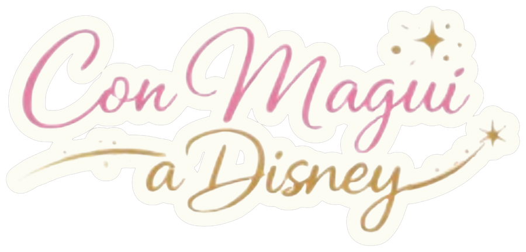
Esta guía está armada para que la abras desde el celular, un día a la vez. No hace falta que la leas entera antes de viajar, y mucho menos que memoricen nada. La idea es simple: la noche anterior a cada parque, abrís el día que corresponde (pestaña "Universal" o "Disney") y ahí vas a encontrar todo lo que necesitan saber, en orden, desde que se levantan hasta que vuelven al hotel.
Guardá esta guía en la pantalla de inicio del celular (compartir → agregar a pantalla de inicio) para abrirla rápido sin buscarla entre los mensajes.
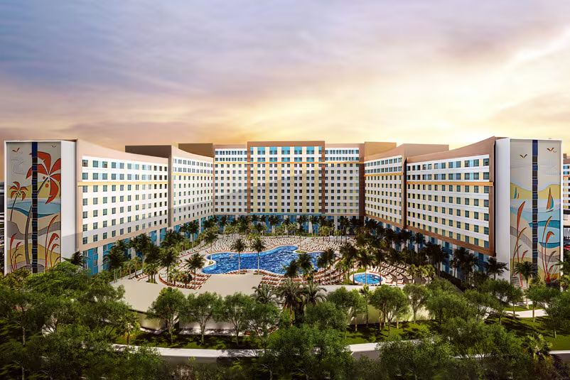
Hotel: Universal's Endless Summer Resort – Dockside Inn and Suites
Check-in: sábado 31 de octubre 2026
Check-out: miércoles 4 de noviembre 2026 (4 noches)
Habitación: Standard, 2 camas queen · 2 adultos + 2 niños
Ticket de parque: 2-Day Park-to-Park (Islands of Adventure + Universal Studios Florida) + 1-Day Epic Universe Promo, fecha fija domingo 1 de noviembre
Express Pass: 1-Day Universal Express para Epic Universe (1 nov, uso único por atracción) + 2-Day 2-Park Universal Express Unlimited para Islands of Adventure y Universal Studios (2 y 3 nov)
Reserva: terminada en ...U2 · Pagada al 100%
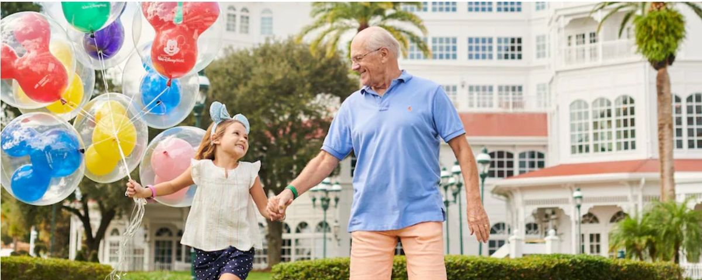
Hotel: Disney's All-Star Movies Resort
Check-in: miércoles 4 de noviembre 2026
Check-out: miércoles 11 de noviembre 2026 (7 noches)
Habitación: Vistas preferidas, capacidad hasta 4 personas
Ticket: 4 días, acceso a 1 parque por día (sin Park Hopper)
Plan de comidas: Quick Service Dining Plan
Memory Maker: incluido
Reserva: terminada en ...4539
| Fecha | Día | Qué hacen |
|---|---|---|
| Sáb 31 oct | Llegada | Check-in en Universal, sin parque |
| Dom 1 nov | Parque | Epic Universe |
| Lun 2 nov | Parque | Islands of Adventure |
| Mar 3 nov | Parque | Universal Studios Florida |
| Mié 4 nov | Transición | Check-out Universal → check-in Disney |
| Jue 5 nov | Parque | Magic Kingdom + Be Our Guest (13:35 hs) |
| Vie 6 nov | Parque | Hollywood Studios |
| Sáb 7 nov | Libre | Descanso / outlets |
| Dom 8 nov | Parque | EPCOT |
| Lun 9 nov | Descanso + evento | Día liviano + Fiesta de Mickey desde 16:00 (hasta 00 hs) |
| Mar 10 nov | Libre / Parque | Animal Kingdom o día libre — a definir |
| Mié 11 nov | Parque o Salida | Animal Kingdom + Miami, o check-out + Miami |
Estos términos van a aparecer todo el tiempo en la guía y en las apps de los parques. No hace falta que los memoricen: acá están explicados en criollo, "qué significa para ustedes y cuándo lo van a usar".
| Cuándo | Qué hacer |
|---|---|
| Ya mismo | Descargar My Disney Experience y Universal Orlando Resort en los celulares que van a usar en el viaje. Crear o vincular las cuentas de José y Dilsen, y agregar a Valeria y Sarahí como integrantes del grupo familiar dentro de My Disney Experience. |
| Ya mismo | Medir realmente a Valeria y Sarahí (sin zapatillas, contra una pared) y anotar la altura en centímetros. La tabla de esta guía tiene varias atracciones "pendientes de medición" que se resuelven con este dato. |
| Antes del 5 de octubre | Confirmar el pago pendiente de la reserva de Disney. |
| 7 días antes de llegar a Disney (es decir, el 28 de octubre, ya que llegan el 4/11), a las 7:00 am hora del Este de EE.UU. (8:00 am Argentina) | Momento en que se habilita la compra de Lightning Lane para huéspedes de hotel Disney. Ese mismo momento se puede reservar Lightning Lane para varios días de la estadía a la vez. Conviene que José o Dilsen estén con el celular en mano a esa hora exacta, porque los horarios de las atracciones más pedidas (Tron, Guardians of the Galaxy, Rise of the Resistance) se agotan rápido. |
| 1-2 semanas antes | Revisar en la web oficial de Universal y Disney el estado de las atracciones (cierres por mantenimiento / "refurbishment") de los parques que van a visitar, por si alguna estrella del plan está cerrada esas fechas. |
| 1-2 semanas antes | Revisar los horarios oficiales actualizados de apertura y cierre de cada parque para las fechas del viaje (pueden variar respecto a lo que dice esta guía). |
| Antes de viajar | Confirmar que las 4 entradas a la Fiesta Navideña de Mickey (9 de noviembre) estén vinculadas en My Disney Experience junto con el resto de los tickets. |
| Antes de viajar | Verificar el método de pago vinculado en ambas apps (para Mobile Order y compras dentro del parque) y activar el plan de datos o roaming internacional del celular para tener internet dentro de los parques. |
| Antes de viajar | Llevar cargador portátil (power bank) cargado: el uso constante de las apps con GPS y pantalla prendida consume batería rápido, sobre todo en los días de Fiesta de Mickey. |
| Antes de viajar | Sacar captura de pantalla (screenshot) de las reservas de hotel, los Lightning Lane comprados y las entradas de la Fiesta de Mickey, y guardarlas en la galería del teléfono. Si falla el internet dentro del parque, esa información va a estar igual disponible sin conexión. |
4 noches en Dockside Inn and Suites, con Early Theme Park Entry cuando corresponda y tres días de parque distintos. Tocá cada día para desplegarlo — se abre y se cierra, así podés ir directo al que te importa hoy.
Universal no siempre habilita el Early Park Admission en el mismo parque todos los días, y las atracciones que participan del Express pueden cambiar. Revisen la app Universal Orlando Resort la noche anterior a cada día para confirmar qué parque tiene entrada anticipada y qué atracciones están operativas.
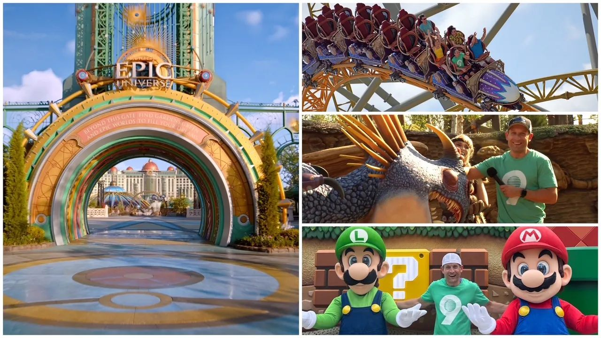
| Atracción | Mínimo | Valeria 145 | Sarahí 122 | Intensidad |
|---|---|---|---|---|
| Stardust Racers | 122 cm | ✅ | ⚠️ mínimo exacto | 🔴 |
| Constellation Carousel | Sin mínimo | ✅ | ✅ | 🟢 |
| Mario Kart: Bowser's Challenge | 102 cm | ✅ | ✅ | 🟡 |
| Mine-Cart Madness | 102 cm | ✅ | ✅ | 🟡 |
| Yoshi's Adventure | 87 cm | ✅ | ✅ | 🟢 |
| Dragon Racer's Rally | 122 cm | ✅ | ⚠️ mínimo exacto | 🔴 |
| Fyre Drill | Sin mínimo | ✅ | ✅ | 🟢 |
| Hiccup's Wing Gliders | 102 cm | ✅ | ✅ | 🟡 |
| Harry Potter and the Battle at the Ministry | 102 cm | ✅ | ✅ | 🟡 |
| Monsters Unchained: The Frankenstein Experiment | 122 cm | ✅ | ⚠️ mínimo exacto | 🔴 |
| Curse of the Werewolf | 102 cm | ✅ | ✅ | 🟡 |
Epic Universe es circular: hay una plaza central (Celestial Park) de la que salen 5 "portales" hacia cada mundo temático — Super Nintendo World, How to Train Your Dragon – Isle of Berk, Wizarding World – Ministry of Magic, Dark Universe y la propia Celestial Park con sus atracciones. No hay un solo camino recto: conviene recorrerlo mundo por mundo, sin cruzar de un extremo al otro y volver.
Tienen el 1-Day Universal Express para este parque. Ojo: se usa una sola vez por atracción — no es ilimitado como el que van a tener el lunes y martes. Eso cambia la estrategia: no conviene "gastar" el Express a primera hora en una atracción si la fila standby (la fila común) todavía está corta — en ese caso, mejor hacer standby y guardar el Express de esa atracción para más tarde, cuando la fila sea más larga. La única atracción que no acepta Express es Dragon Racer's Rally; tampoco los encuentros con personajes como Toothless.
| Apertura oficial del parque | Confirmar en la app (suele ser 9:00 am, puede variar) |
| Early Park Admission (si está habilitado) | 30 minutos antes de la apertura oficial |
| Levantarse | 7:00 am |
| Desayuno | 7:15 am (en el hotel o algo liviano) |
| Salir de la habitación | 7:45 am como máximo |
| Estar físicamente en la entrada de CityWalk | 8:00-8:10 am |
La diferencia entre estos tres horarios importa: la "apertura oficial" es cuando abre para todo el público; el "Early Park Admission" es el ratito extra que tienen ustedes por hospedarse en el resort; y el horario en el que nosotros queremos que estén parados en la entrada es siempre antes de cualquiera de los dos, para no perder ese tiempo extra haciendo fila de seguridad.
Este es el tramo donde de verdad se nota si el plan funciona o no, porque es el único momento del día en que las filas están realmente bajas.
🎢 Montaña rusa doble con lanzamientos y carrera entre dos trenes.
💨 ⬇️ 🔄 ☀️
⚡ Universal Express: 1 uso por atracción (Epic Universe)
Montaña rusa doble con lanzamientos y carrera entre dos trenes. Altura mínima 122 cm / 48". Sarahí probablemente no llegue — medirla antes de hacer fila.
🔒 Lockers: Lockers gratuitos obligatorios en la entrada (objetos sueltos, celulares, mochilas).
🔁 Mientras tanto: Constellation Carousel, a metros, es la alternativa tranquila para quien no suba.
♿ Rider Switch / Child Swap disponible: si una de las dos no sube (por altura o porque no quiere), un adulto espera afuera con ella mientras el resto hace la fila; al bajar, se turnan sin hacer la fila dos veces — se pide al Cast Member antes de subir.
🎢 Calesita temática, tranquila.
🔄 ☀️
⚡ Universal Express incluido (1 uso por atracción en Epic Universe)
Calesita temática, tranquila. Sin restricción de altura; menores de 122 cm necesitan acompañante. Buena opción para bajar revoluciones entre atracciones fuertes.
🎢 Dark ride interactiva con pantallas de realidad aumentada, sin caídas.
🕶️ 💨 ❄️
⚡ Universal Express: 1 uso por atracción (Epic Universe)
Dark ride interactiva con pantallas de realidad aumentada, sin caídas. Altura mínima 102 cm / 40" (con acompañante hasta 122 cm / 48"). Ideal para las dos nenas.
🔒 Lockers: Lockers gratuitos recomendados (mochilas no entran al vehículo).
🔁 Mientras tanto: recorrer las tiendas temáticas de Super Nintendo World, a pasos de la entrada.
♿ Rider Switch / Child Swap disponible: si una de las dos no sube (por altura o porque no quiere), un adulto espera afuera con ella mientras el resto hace la fila; al bajar, se turnan sin hacer la fila dos veces — se pide al Cast Member antes de subir.
🎢 Montaña rusa familiar temática Donkey Kong.
💨 🔄 ☀️
⚡ Universal Express: 1 uso por atracción (Epic Universe)
Montaña rusa familiar temática Donkey Kong. Altura mínima 102 cm / 40" (con acompañante hasta 122 cm / 48"). Valeria puede sola; Sarahí según su medición.
🔒 Lockers: Lockers gratuitos junto a la entrada.
🔁 Mientras tanto: área de juegos interactivos de Super Nintendo World, al lado.
♿ Rider Switch / Child Swap disponible: si una de las dos no sube (por altura o porque no quiere), un adulto espera afuera con ella mientras el resto hace la fila; al bajar, se turnan sin hacer la fila dos veces — se pide al Cast Member antes de subir.
🎢 Recorrido lento y visual sobre el lomo de Yoshi.
🚶 ☀️
⚡ Universal Express: 1 uso por atracción (Epic Universe)
Recorrido lento y visual sobre el lomo de Yoshi. Altura mínima real: 87 cm / 34" (con acompañante hasta 122 cm / 48"). Apta para ambas nenas.
🎢 Montaña rusa familiar con giros.
🔄 💨 ☀️
⚡ No participa de Express — solo fila standby
Montaña rusa familiar con giros. Altura mínima 122 cm / 48". No acepta Express — siempre standby. Revisar fila al llegar a esta zona y decidir si la hacen ahora o más tarde según el tiempo de espera.
🔒 Lockers: Lockers gratuitos en la entrada.
🔁 Mientras tanto: Fyre Drill, a metros, acepta cualquier altura con acompañante.
♿ Rider Switch / Child Swap disponible: si una de las dos no sube (por altura o porque no quiere), un adulto espera afuera con ella mientras el resto hace la fila; al bajar, se turnan sin hacer la fila dos veces — se pide al Cast Member antes de subir.
🎢 Atracción giratoria suave, sin restricción de altura (acompañante hasta 122 cm / 48").
🔄 ☀️
⚡ Universal Express: 1 uso por atracción (Epic Universe)
Atracción giratoria suave, sin restricción de altura (acompañante hasta 122 cm / 48").
🎢 Vuelo suspendido, familiar.
💨 ☀️
⚡ Universal Express: 1 uso por atracción (Epic Universe)
Vuelo suspendido, familiar. Altura mínima 102 cm / 40" (con acompañante hasta 122 cm / 48").
🔒 Lockers: Lockers gratuitos en la entrada.
🔁 Mientras tanto: Fyre Drill o los juegos de agua de la zona, muy cerca.
♿ Rider Switch / Child Swap disponible: si una de las dos no sube (por altura o porque no quiere), un adulto espera afuera con ella mientras el resto hace la fila; al bajar, se turnan sin hacer la fila dos veces — se pide al Cast Member antes de subir.
🎢 Dark ride con caídas simuladas y efectos oscuros.
🌑 ⬇️ 🔊 ❄️
⚡ Universal Express: 1 uso por atracción (Epic Universe)
Dark ride con caídas simuladas y efectos oscuros. Altura mínima 102 cm / 40" (con acompañante hasta 122 cm / 48"). Puede resultar intensa por la oscuridad y los efectos — para Sarahí, avisarle antes qué va a pasar.
🔒 Lockers: Lockers gratuitos obligatorios (mochilas y objetos sueltos).
🔁 Mientras tanto: recorrer el Ministerio de Magia caminando, la ambientación ya es una experiencia en sí misma.
♿ Rider Switch / Child Swap disponible: si una de las dos no sube (por altura o porque no quiere), un adulto espera afuera con ella mientras el resto hace la fila; al bajar, se turnan sin hacer la fila dos veces — se pide al Cast Member antes de subir.
🎢 Dark ride con movimiento y sustos temáticos de terror clásico.
🌑 👻 🔊 ❄️
⚡ Universal Express: 1 uso por atracción (Epic Universe)
Dark ride con movimiento y sustos temáticos de terror clásico. Altura mínima 122 cm / 48". Sarahí probablemente no llegue.
🔒 Lockers: Lockers gratuitos obligatorios.
🔁 Mientras tanto: Curse of the Werewolf, en la misma zona, tiene mínimo más bajo.
♿ Rider Switch / Child Swap disponible: si una de las dos no sube (por altura o porque no quiere), un adulto espera afuera con ella mientras el resto hace la fila; al bajar, se turnan sin hacer la fila dos veces — se pide al Cast Member antes de subir.
🎢 Atracción giratoria temática.
🔄 🌑 ❄️
⚡ Universal Express: 1 uso por atracción (Epic Universe)
Atracción giratoria temática. Altura mínima 102 cm / 40" (con acompañante hasta 122 cm / 48").
🔒 Lockers: Lockers gratuitos recomendados.
No tienen Dining Plan en Universal (eso es solo para Disney), así que la comida se paga aparte, en efectivo o tarjeta. Opciones dentro de Super Nintendo World (Toadstool Cafe) o en Celestial Park, según en qué zona estén al mediodía. Conviene comer temprano (12:00-12:30) o tarde (14:00-14:30) para evitar el pico de las 13 hs.
Repasen las atracciones que quedaron pendientes de la mañana, usando el Express que todavía no gastaron en cada una. Reserven un rato en Celestial Park para las tiendas y fotos con los personajes que anden por ahí.
Epic Universe no tiene, por ahora, un show nocturno de fuegos artificiales como Disney. El cierre es más tranquilo: buen momento para las compras finales y una vuelta relajada por Celestial Park, que de noche se ve muy lindo iluminado.
Caminen o tomen el shuttle desde CityWalk de regreso a Dockside. Con el cierre del parque, puede haber más gente esperando el shuttle que a la mañana — calculen 15-20 minutos extra respecto al viaje de ida.
| Atracción | Mínimo | Valeria 145 | Sarahí 122 | Intensidad |
|---|---|---|---|---|
| Hagrid's Magical Creatures Motorbike Adventure | 122 cm | ✅ | ⚠️ mínimo exacto | 🔴 |
| Jurassic World VelociCoaster | 130 cm | ✅ | ❌ | 🔴 |
| Jurassic Park River Adventure | 107 cm | ✅ | ✅ | 🟡 |
| Harry Potter and the Forbidden Journey | 122 cm | ✅ | ⚠️ mínimo exacto | 🟡 |
| Flight of the Hippogriff | 97 cm | ✅ | ✅ | 🟡 |
| Skull Island: Reign of Kong | 91 cm | ✅ | ✅ | 🟡 |
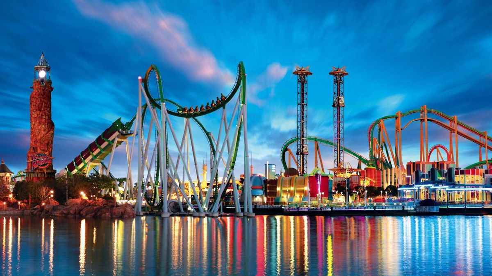
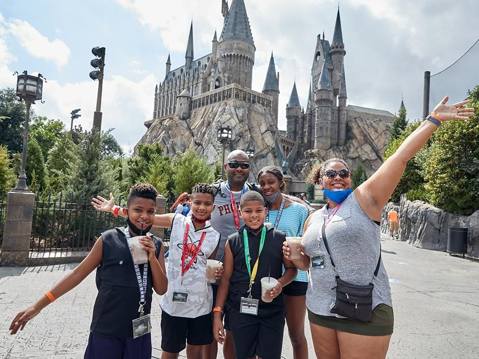
Hoy empieza el 2-Day 2-Park Universal Express Unlimited, válido en Islands of Adventure y Universal Studios Florida: sin límite de usos por atracción participante, durante los dos días. Es distinto al de ayer en Epic Universe.
Hagrid's Magical Creatures Motorbike Adventure dejó de aceptar Universal Express (cambio confirmado oficialmente en 2026). Es la atracción más pedida del parque y ahora solo se hace por fila standby — por eso hoy la mañana está armada alrededor de Hagrid's y no de VelociCoaster: si van primero a VelociCoaster porque tienen Express ahí, pierden la mejor ventana del día para Hagrid's, que es apenas abre el parque.
| Apertura oficial | Confirmar en la app |
| Early Park Admission (si está habilitado) | 30 min antes de la apertura oficial |
| Levantarse | 7:00 am |
| Salir de la habitación | 7:45 am |
| Estar en la entrada de CityWalk | 8:00-8:10 am |
Misma secuencia que el domingo: shuttle o caminata hasta CityWalk → seguridad → molinetes de Islands of Adventure (portón distinto al de Epic Universe, están señalizados por separado) → escaneo de ticket. Desde el ingreso, caminen directo hacia Jurassic Park / The Wizarding World of Harry Potter – Hogsmeade, que está a la derecha del ingreso principal.
🎢 Montaña rusa narrativa, lanzamientos y una caída pronunciada.
💨 ⬇️ ☀️ 🌑
⚡ No participa de Express — solo fila standby
Montaña rusa narrativa, lanzamientos y una caída pronunciada. Altura mínima 122 cm / 48". Solo fila standby.
🔒 Lockers: Lockers gratuitos obligatorios en la entrada.
🔁 Mientras tanto: Flight of the Hippogriff, en la misma zona, es la versión suave con temática similar.
♿ Rider Switch / Child Swap disponible: si una de las dos no sube (por altura o porque no quiere), un adulto espera afuera con ella mientras el resto hace la fila; al bajar, se turnan sin hacer la fila dos veces — se pide al Cast Member antes de subir.
🎢 La montaña rusa más intensa del parque, con lanzamientos e inversiones.
💨 ⬇️ 🔄 ☀️
⚡ Express Unlimited incluido con el pase Express de este parque
La montaña rusa más intensa del parque, con lanzamientos e inversiones. Altura mínima 130 cm / 51". Sarahí probablemente no llegue — medirla antes de hacer fila.
🔒 Lockers: Lockers gratuitos obligatorios.
🔁 Mientras tanto: Jurassic Park River Adventure, a pocos metros, con mínimo más bajo.
♿ Rider Switch / Child Swap disponible: si una de las dos no sube (por altura o porque no quiere), un adulto espera afuera con ella mientras el resto hace la fila; al bajar, se turnan sin hacer la fila dos veces — se pide al Cast Member antes de subir.
🎢 Bote con una caída final que moja bastante.
⬇️ 💦 ☀️
⚡ Express Unlimited incluido con el pase Express de este parque
Bote con una caída final que moja bastante. Altura mínima 107 cm / 42". Locker recomendado para celulares si van adelante.
🔒 Lockers: Locker gratuito recomendado para celulares en fila (moja bastante).
🎢 Dark ride con movimiento tipo simulador (brazo robótico).
🕶️ 🤢 🌑 ❄️ 🎭
⚡ Express Unlimited incluido con el pase Express de este parque
Dark ride con movimiento tipo simulador (brazo robótico). Altura mínima 122 cm / 48". Puede marear a quien sea sensible al movimiento.
🔒 Lockers: Lockers gratuitos obligatorios antes de entrar.
🔁 Mientras tanto: Flight of the Hippogriff, misma zona temática, mínimo más bajo.
♿ Rider Switch / Child Swap disponible: si una de las dos no sube (por altura o porque no quiere), un adulto espera afuera con ella mientras el resto hace la fila; al bajar, se turnan sin hacer la fila dos veces — se pide al Cast Member antes de subir.
🎢 Montaña rusa familiar, suave.
💨 ☀️
⚡ Express Unlimited incluido con el pase Express de este parque
Montaña rusa familiar, suave. Altura mínima 97 cm / 38". Apta para ambas nenas.
🎢 Recorrido en vehículo con efectos oscuros y King Kong animatrónico.
🌑 👻 🔊 ❄️
⚡ Express Unlimited incluido con el pase Express de este parque
Recorrido en vehículo con efectos oscuros y King Kong animatrónico. Altura mínima 91 cm / 36".
🔒 Lockers: Lockers gratuitos recomendados.
Zona de atracciones suaves y juegos de agua, ideal para bajar el ritmo con las nenas a media tarde.
Three Broomsticks, en Hogsmeade, es la opción más temática de la zona y coincide con el recorrido de la mañana — buen lugar para el almuerzo sin cambiar de zona.
Repitan VelociCoaster o Forbidden Journey con el Express Unlimited si les gustaron, y completen Toon Lagoon y Seuss Landing con las nenas.
Como el ticket es Park-to-Park, si el día viene rindiendo bien pueden cruzar a Universal Studios Florida por la tarde-noche usando el Hogwarts Express, el tren temático que sale desde Hogsmeade y los deja directo en Diagon Alley (el otro parque). Solo pueden usarlo porque tienen Park-to-Park — con un ticket de un solo parque no se puede.
Shuttle o caminata desde CityWalk de regreso a Dockside, igual que el domingo.
| Atracción | Mínimo | Valeria 145 | Sarahí 122 | Intensidad |
|---|---|---|---|---|
| Harry Potter and the Escape from Gringotts | 107 cm | ✅ | ✅ | 🟡 |
| Revenge of the Mummy | 122 cm | ✅ | ⚠️ mínimo exacto | 🔴 |
| Race Through New York Starring Jimmy Fallon | 102 cm | ✅ | ✅ | 🟡 |
| Despicable Me Minion Mayhem | 102 cm | ✅ | ✅ | 🟡 |
| E.T. Adventure | 86 cm | ✅ | ✅ | 🟢 |
No demos por sentado que hoy tienen Early Park Admission en este parque específico: Universal rota el beneficio entre sus parques según el día. Revisen la app la noche anterior para confirmar si corresponde acá.
Segundo y último día del 2-Day 2-Park Universal Express Unlimited — sin límite de usos por atracción participante.
| Apertura oficial | Confirmar en la app |
| Early Park Admission (si corresponde hoy) | 30 min antes de la apertura oficial |
| Levantarse | 7:00 am |
| Salir de la habitación | 7:45 am |
| Estar en la entrada de CityWalk | 8:00-8:10 am |
Misma secuencia de siempre: seguridad → molinetes de Universal Studios Florida (portón distinto a los otros dos días) → escaneo de ticket. Desde el ingreso, caminen hacia la derecha en dirección a Diagon Alley (The Wizarding World of Harry Potter).
🎢 Montaña rusa narrativa con proyecciones 3D y algún lanzamiento.
🌑 💨 🕶️ ❄️
⚡ Express Unlimited incluido con el pase Express de este parque
Montaña rusa narrativa con proyecciones 3D y algún lanzamiento. Altura mínima 107 cm / 42". Apta para Valeria; verificar con Sarahí según su medición.
🔒 Lockers: Lockers gratuitos obligatorios en la entrada del banco.
🔁 Mientras tanto: recorrer el callejón Diagon a pie, con animatronics y detalles para ver sin subir.
♿ Rider Switch / Child Swap disponible: si una de las dos no sube (por altura o porque no quiere), un adulto espera afuera con ella mientras el resto hace la fila; al bajar, se turnan sin hacer la fila dos veces — se pide al Cast Member antes de subir.
🎢 Montaña rusa en la oscuridad, con un lanzamiento hacia atrás.
🌑 💨 👻 🔄
⚡ Express Unlimited incluido con el pase Express de este parque
Montaña rusa en la oscuridad, con un lanzamiento hacia atrás. Altura mínima 122 cm / 48". Puede ser intensa por la oscuridad y el susto — avisarle a Sarahí antes si llega a la altura.
🔒 Lockers: Lockers gratuitos obligatorios.
🔁 Mientras tanto: Race Through New York, en la misma zona, mínimo más bajo.
♿ Rider Switch / Child Swap disponible: si una de las dos no sube (por altura o porque no quiere), un adulto espera afuera con ella mientras el resto hace la fila; al bajar, se turnan sin hacer la fila dos veces — se pide al Cast Member antes de subir.
🎢 Simulador sentado, sin caídas físicas.
🕶️ 💺 ❄️
⚡ Express Unlimited incluido con el pase Express de este parque
Simulador sentado, sin caídas físicas. Altura mínima 102 cm / 40".
🎢 Simulador familiar, apto para las dos nenas.
🕶️ 💺 ❄️
⚡ Express Unlimited incluido con el pase Express de este parque
Simulador familiar, apto para las dos nenas. Altura mínima 102 cm / 40".
🎢 Recorrido en bicicleta voladora, muy suave.
🚶 💺
⚡ Express Unlimited incluido con el pase Express de este parque
Recorrido en bicicleta voladora, muy suave. Altura mínima 86 cm / 34". Apta para ambas.
Leaky Cauldron, en Diagon Alley, es la opción temática de la zona. Si prefieren algo más rápido, hay varios locales de Mobile Order en Production Central y San Francisco.
Con el Express Unlimited de sobra, aprovechen para repetir Gringotts o la Mummy si quieren, y sumen Fast & Furious: Supercharged si les interesa.
Antes de cerrar el día, den una vuelta por Diagon Alley de noche (se ilumina distinto) y paren en algún show callejero o encuentro con personajes si coincide el horario — Universal Studios tiene varios shows breves y encuentros con personajes de Illumination y Universal Classic Monsters que valen la pena con las nenas, sin necesidad de subirse a nada.
Cierre de la noche con una vuelta por CityWalk (tiendas, algo para comer) antes de volver a Dockside en shuttle o caminando.
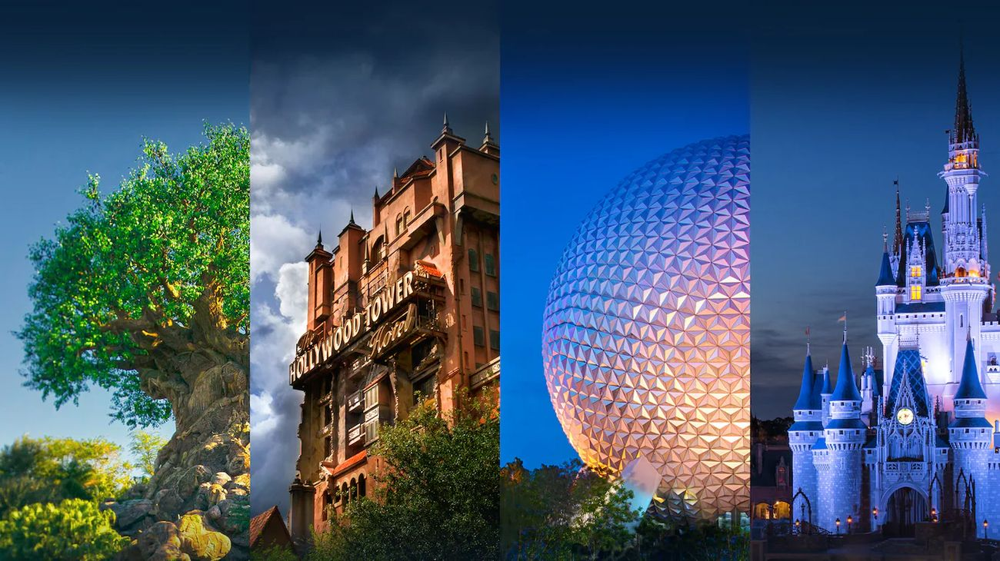
7 noches en Disney's All-Star Movies Resort, ticket de 4 días (1 parque por día, sin hopper), Quick Service Dining Plan y Memory Maker incluido. El 5 de noviembre es el gran día completo de Magic Kingdom, con la reserva confirmada en Be Our Guest Restaurant a las 13:35 hs. El 9 de noviembre vuelven a Magic Kingdom, pero ese día es liviano de mañana: el plan fuerte es la Fiesta de Mickey desde las 16:00 hs (tiene su propia pestaña con el detalle hora por hora).
Recién van a poder comprar y elegir horarios de Lightning Lane el 28 de octubre a las 7:00 am hora del Este (7 días antes del check-in en Disney). Esta guía da un orden de prioridades sugerido para cada día, pero el plan final depende de qué horarios consigan ese momento. Regla general que van a ver repetida en cada día: si ya compraron Lightning Lane Single Pass para la atracción estrella del parque con un horario específico, no vayan a esa misma atracción en el Early Entry — usen ese ratito de entrada anticipada en la segunda atracción más pedida, y lleguen a la que tiene Single Pass a la hora reservada.
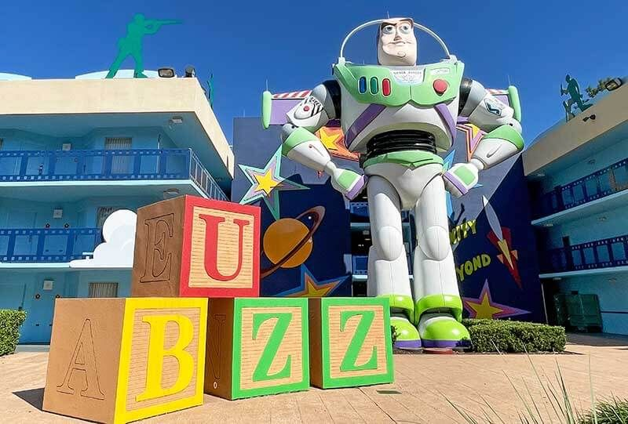
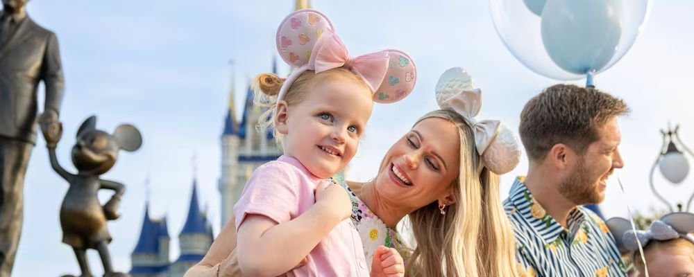
| Atracción | Mínimo | Valeria 145 | Sarahí 122 | Intensidad |
|---|---|---|---|---|
| Seven Dwarfs Mine Train | 97 cm | ✅ | ✅ | 🟡 |
| Peter Pan's Flight | Sin mínimo | ✅ | ✅ | 🟢 |
| The Many Adventures of Winnie the Pooh | Sin mínimo | ✅ | ✅ | 🟢 |
| Space Mountain | 112 cm | ✅ | ✅ | 🔴 |
| TRON Lightcycle / Run | 122 cm | ✅ | ⚠️ mínimo exacto | 🔴 |
| Buzz Lightyear's Space Ranger Spin | Sin mínimo | ✅ | ✅ | 🟢 |
| Haunted Mansion | Sin mínimo | ✅ | ✅ | 🟡 |
| Tiana's Bayou Adventure | 102 cm | ✅ | ✅ | 🔴 |
| Big Thunder Mountain Railroad | 102 cm | ✅ | ✅ | 🟡 |
| Country Bear Musical Jamboree | Sin mínimo | ✅ | ✅ | 🟢 |
| Pirates of the Caribbean | Sin mínimo | ✅ | ✅ | 🟢 |
| Jungle Cruise | Sin mínimo | ✅ | ✅ | 🟢 |
Este es el gran día completo de Magic Kingdom de la familia, con ticket regular. El 9 de noviembre van a volver, pero esa va a ser una noche distinta — la Fiesta Navideña de Mickey. Hoy es para conocer el parque con tranquilidad, meterse en Fantasyland, Tomorrowland, Liberty Square, Frontierland y Adventureland, y disfrutar la reserva confirmada en Be Our Guest Restaurant a las 13:35 hs, que es el ancla de todo el recorrido.
🌅 8:30 Early Theme Park Entry
↓
🎢 9:00–10:30 Mañana de atracciones (Fantasyland + Tomorrowland)
↓
🎭 11:35 aprox. Show frente al castillo (a confirmar)
↓
🏰 13:35 Almuerzo en Be Our Guest
↓
🎉 15:00 Disney Festival of Fantasy Parade
↓
🎢 15:30–17:30 Liberty Square + Frontierland + Adventureland
↓
🌙 Atardecer Disney Starlight: Dream the Night Away (horario a confirmar el mismo día)
↓
✨ 20:00 Happily Ever After
| Levantarse | 7:00–7:15 am |
| Desayuno | En Disney's All-Star Movies Resort |
| Salir de la habitación | 7:30 am aprox. |
Entre levantarse y salir: baño, protector solar, botellas de agua, power bank, y revisar en My Disney Experience que el MagicMobile/tickets estén disponibles y que las Lightning Lane confirmadas para hoy sigan en pie.
Diríjanse a la parada de buses de All-Star Movies con margen: el objetivo es estar físicamente dentro de Magic Kingdom antes de las 8:00 am, no llegar recién a las 8:30 cuando arranca el Early Entry.
El bus de Disney los deja directamente en la zona de acceso de Magic Kingdom — no pasan por el Transportation & Ticket Center como en otros viajes. La secuencia es: bus → control de seguridad → molinetes con MagicMobile/ticket → Main Street U.S.A. → zona habilitada para Early Entry.
Early Entry permite a los huéspedes de hoteles Disney empezar a usar ciertas atracciones 30 minutos antes de la apertura general (9:00 am). Las zonas habilitadas son Fantasyland y Tomorrowland. Qué conviene priorizar depende de qué Lightning Lane hayan conseguido — por eso hay dos caminos.
Prioridad total: Seven Dwarfs Mine Train. Si sobra tiempo del Early Entry, sigan con Peter Pan's Flight.
No repitan en Early Entry una atracción que ya está resuelta con Lightning Lane. Usen esos 30 minutos en Peter Pan's Flight, Space Mountain o The Many Adventures of Winnie the Pooh, según la espera real que vean en la app en ese momento.
Sigan un recorrido geográficamente lógico dentro de Fantasyland y Tomorrowland — eviten cruzar el parque de punta a punta. No hace falta hacer todas estas atracciones: usen las etiquetas como guía de prioridad real.
🎢 Montaña rusa familiar con balanceo suave.
💨 🔄 ☀️
⚡ Lightning Lane Multi Pass
Montaña rusa familiar con balanceo suave. Altura mínima 97 cm / 38".
🔁 Mientras tanto: Peter Pan's Flight, a metros, sin restricción de altura.
♿ Rider Switch / Child Swap disponible: si una de las dos no sube (por altura o porque no quiere), un adulto espera afuera con ella mientras el resto hace la fila; al bajar, se turnan sin hacer la fila dos veces — se pide al Cast Member antes de subir.
🎢 Vehículo suspendido sobrevolando Londres y Nunca Jamás.
🌑
⚡ Lightning Lane Multi Pass
Vehículo suspendido sobrevolando Londres y Nunca Jamás. Sin restricción de altura, pero junta fila todo el día.
🎢 Vehículo tranquilo, ideal si el DAS o la espera lo permiten.
🌑
⚡ Lightning Lane Multi Pass
Vehículo tranquilo, ideal si el DAS o la espera lo permiten. Sin restricción de altura.
🎢 Montaña rusa a oscuras, sin loopings pero con velocidad sostenida.
🌑 💨
⚡ Lightning Lane Multi Pass
Montaña rusa a oscuras, sin loopings pero con velocidad sostenida. Altura mínima 112 cm / 44".
🔁 Mientras tanto: Buzz Lightyear's Space Ranger Spin, en la misma zona, sin restricción de altura.
♿ Rider Switch / Child Swap disponible: si una de las dos no sube (por altura o porque no quiere), un adulto espera afuera con ella mientras el resto hace la fila; al bajar, se turnan sin hacer la fila dos veces — se pide al Cast Member antes de subir.
🎢 La más rápida e intensa del parque, en moto individual.
💨 ☀️
⚡ Lightning Lane Multi Pass
La más rápida e intensa del parque, en moto individual. Altura mínima 122 cm / 48". Puede esperar si el resto de la familia no quiere subir.
🔒 Lockers: Lockers gratuitos recomendados (mochilas no suben).
🔁 Mientras tanto: Buzz Lightyear o Space Mountain, en la misma zona.
♿ Rider Switch / Child Swap disponible: si una de las dos no sube (por altura o porque no quiere), un adulto espera afuera con ella mientras el resto hace la fila; al bajar, se turnan sin hacer la fila dos veces — se pide al Cast Member antes de subir.
🎢 Tiro al blanco interactivo en vehículo giratorio.
💺
⚡ Lightning Lane Multi Pass
Tiro al blanco interactivo en vehículo giratorio. Sin restricción de altura.
Estos son los horarios de referencia publicados actualmente para el 5 de noviembre de 2026. Confírmenlos en My Disney Experience apenas entren al parque — Disney puede ajustarlos.
| Horario | Espectáculo | Dónde | Categoría |
|---|---|---|---|
| 10:00 / 11:35 / 12:45 / 14:55 / 16:00 | Mickey's Magical Friendship Faire | Cinderella Castle Forecourt Stage | Muy recomendado |
| 11:05 aprox. | Disney Adventure Friends Cavalcade | Recorrido corto por el Hub | Si coincide |
| 15:00 | Disney Festival of Fantasy Parade | Frontierland → Liberty Square → Main Street | Imperdible |
| Horario a confirmar | Disney Starlight: Dream the Night Away | Town Square → Hub → Liberty Square → Frontierland | Imperdible |
| 20:00 | Happily Ever After | Cinderella Castle | Imperdible |
| Funciones frecuentes, sin horario fijo | Mickey's PhilharMagic · Country Bear Musical Jamboree · Monsters, Inc. Laugh Floor | Interiores, con A/C | Opcional / descanso |
| Espontáneo | Dapper Dans / música de Main Street | Main Street U.S.A. | Entretenimiento espontáneo |
Hoy no hay Mickey's Once Upon a Christmastime Parade, Minnie's Wonderful Christmastime Fireworks ni entretenimiento exclusivo del evento navideño — eso es específicamente el 9 de noviembre, cuando tienen la entrada a la fiesta. No los confundan.
Sigan con atracciones cercanas a donde estén, adaptando según lo que ya hicieron en el Early Entry. Si quieren ver la cavalcade de las 11:05 y están cerca del Hub, sumen la función sin desviarse mucho. Eviten reservar una ventana de Lightning Lane entre las 12:40 y las 15:15, salvo que puedan usarla con total comodidad después del almuerzo — el almuerzo y Festival of Fantasy son los dos anclajes de esta franja del día.
Alrededor de las 12:25, empiecen a moverse hacia Cinderella Castle si van a ver la función de las 12:45.
Si el horario sigue confirmado para el 5/11, vean el show frente al castillo. Al terminar, no se queden dando vueltas: salgan directo hacia Fantasyland. Ruta: Castle Hub → Fantasyland → Be Our Guest.
13:35 hs · 📍 Fantasyland, dentro del Beast's Castle.
Lleguen 15–20 minutos antes para hacer el check-in. No programen otra comida grande durante la mañana — si necesitan algo antes, alcanza con el desayuno del hotel más algún snack liviano.
Es una comida de experiencia y una pausa real: bloqueen entre 70 y 90 minutos (13:35–14:45 aprox.). No hace falta comer rápido. Pero como después viene Festival of Fantasy a las 15:00, sí conviene no estirar demasiado la sobremesa una vez que termine el servicio.
No prometemos que van a salir exactamente a horario. En cuanto terminen en Be Our Guest, diríjanse directo hacia Liberty Square / Frontierland, no hacia Main Street: el desfile arranca su recorrido en Frontierland y avanza hacia Liberty Square y Main Street, así que desde Be Our Guest están mucho mejor ubicados ahí. Además, aunque figure "15:00", tarda unos minutos en llegar a cada tramo de la ruta.
Si el servicio se demora, no abandonen la comida ni corran: intenten ubicarse en Liberty Square o en un punto más adelantado de la ruta. Si finalmente no llegan, no arruinen el día persiguiéndolo — hay otra oportunidad de ver Magic Kingdom en la Fiesta de Mickey el 9.
Después del desfile, no vuelvan hacia Tomorrowland: ya están del lado occidental del parque, así que conviene seguir en este orden geográfico.
🎢 Recorrido lento en vehículo por una mansión embrujada, con efectos y ambiente tenebroso pero sin sustos bruscos.
🌑 👻
⚡ Lightning Lane Multi Pass
Recorrido lento en vehículo por una mansión embrujada, con efectos y ambiente tenebroso pero sin sustos bruscos. Sin restricción de altura.
🎢 Recorrido en bote con una caída pronunciada al final, moja bastante.
⬇️ 💦 ☀️
⚡ Lightning Lane Multi Pass
Recorrido en bote con una caída pronunciada al final, moja bastante. Altura mínima 102 cm / 40".
🔒 Lockers: Poncho o cambio de ropa recomendado, moja en serio.
🎢 Montaña rusa temática de mina, curvas rápidas pero sin loopings.
💨 ☀️
⚡ Lightning Lane Multi Pass
Montaña rusa temática de mina, curvas rápidas pero sin loopings. Altura mínima 102 cm / 40".
🎢 Show sentado, con aire acondicionado — excelente para bajar intensidad sin salir del recorrido.
❄️ 💺
⚡ Universal Express incluido (1 uso por atracción en Epic Universe)
Show sentado, con aire acondicionado — excelente para bajar intensidad sin salir del recorrido. No es obligación, pero rinde mucho como pausa.
🎢 Recorrido en bote, oscuro pero sin sustos fuertes.
🌑
⚡ Prioridad
Recorrido en bote, oscuro pero sin sustos fuertes. Sin restricción de altura.
🎢 Paseo en bote guiado, con humor.
☀️
⚡ Si hay tiempo
Paseo en bote guiado, con humor. Sin restricción de altura.
Después de Be Our Guest al mediodía no hace falta otra comida grande. Alcanza con Quick Service liviano o un snack con bebida, según el hambre real. Aprovechen para ir al baño, cargar el teléfono, sentarse y revisar los tiempos de la noche.
Desde el 1 de noviembre de 2026, Happily Ever After pasó a las 20:00 hs (antes era 22:00). Esto corre también el horario del desfile nocturno Disney Starlight, que hasta el momento no tiene un horario único confirmado para esta fecha puntual. Apenas entren al parque, revisen el horario exacto del día en la app y reacomoden esta franja si hace falta — la lógica de abajo se mantiene igual.
Disney Starlight: Dream the Night Away es un desfile nocturno iluminado. Recorre Town Square/Main Street → Hub → Liberty Square → Frontierland. Para esta familia conviene ubicarse en Main Street/Town Square o el tramo inicial de la ruta, porque después hay que reposicionarse para los fuegos. No hace falta guardar lugar con una hora y media de anticipación, salvo que el parque esté muy lleno — con 20–30 minutos antes alcanza en un día normal.
Una vez que Disney Starlight haya pasado por su sector, empiecen a moverse progresivamente hacia una zona con vista clara del castillo: Hub o Main Street. No se queden en Frontierland si es la primera vez que ven Happily Ever After — desde ahí se ven los fuegos, pero no se disfrutan bien las proyecciones sobre el castillo.
Fuegos artificiales, música, láseres y proyecciones sobre Cinderella Castle y Main Street. Es su primera visita: que vean el espectáculo completo, sin salir antes para "ganarle" a la gente.
Esperen a que termine el espectáculo, caminen hacia Main Street y sigan los carteles hacia la salida y "Disney Resort Buses". Busquen el número correspondiente a All-Star Movies Resort. Puede haber fila para el bus — es normal, no hace falta correr. El parque sigue abierto hasta las 22:00, así que si prefieren evitar la salida masiva pueden quedarse un rato más recorriendo tiendas o alguna atracción con espera baja antes de irse.
[atracción] · [horario] — recién van a poder comprar Lightning Lane el 28 de octubre a las 7:00 am hora del Este. Regla fija: Be Our Guest 13:35 y Festival of Fantasy 15:00 tienen prioridad sobre cualquier Lightning Lane — no reserven un horario que complique esos dos momentos. Una vez que tengan las reservas reales, reacomoden el recorrido de este día alrededor de ellas.
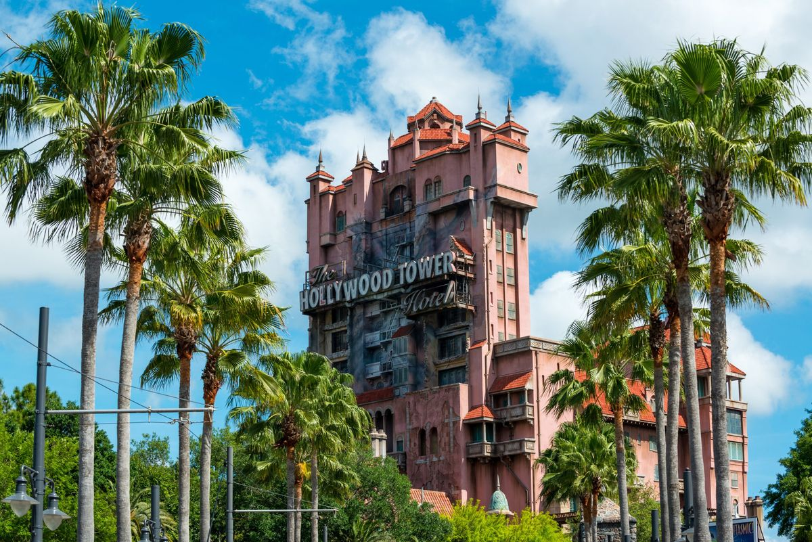
| Atracción | Mínimo | Valeria 145 | Sarahí 122 | Intensidad |
|---|---|---|---|---|
| Star Wars: Rise of the Resistance | 102 cm | ✅ | ✅ | 🟡 |
| Millennium Falcon: Smugglers Run | 97 cm | ✅ | ✅ | 🟡 |
| Slinky Dog Dash | 97 cm | ✅ | ✅ | 🟡 |
| Alien Swirling Saucers | 81 cm | ✅ | ✅ | 🟢 |
| Toy Story Mania | Sin mínimo | ✅ | ✅ | 🟢 |
| Mickey & Minnie's Runaway Railway | Sin mínimo | ✅ | ✅ | 🟢 |
| Tower of Terror | 102 cm | ✅ | ✅ | 🔴 |
| Rock 'n' Roller Coaster | 122 cm | ✅ | ⚠️ mínimo exacto | 🔴 |
| Apertura oficial | Confirmar en la app (estimado 9:00 am) |
| Early Theme Park Entry (huéspedes Disney) | 30 min antes de la apertura oficial |
| Levantarse | 6:45 am |
| Salir de la habitación | 7:30 am |
| Estar en la entrada del parque | 8:00 am |
Bajan del bus en la parada de Hollywood Studios → control de seguridad (mochilas por el escáner) → molinetes de ingreso, donde escanean el ticket o pasan el celular con MagicMobile ya abierto. Si todavía no habilitaron el Early Theme Park Entry, va a haber un área de espera antes de los molinetes.
Si consiguieron Lightning Lane Single Pass para Star Wars: Rise of the Resistance con un horario específico: NO vayan a Rise en el Early Entry — eso sería desperdiciar la entrada anticipada en algo para lo que ya tienen acceso reservado. En cambio, usen el Early Entry para Slinky Dog Dash, que junta fila larguísima apenas abre el parque y no siempre tiene Single Pass disponible. Lleguen a Rise a la hora que reservaron.
Si NO consiguieron Single Pass para Rise: vayan directo a Rise of the Resistance en el Early Entry — es la atracción más demandada del parque.
Es la zona más nueva e inmersiva del parque: recrea el planeta Batuu, con naves, mercados y hasta el idioma propio de la zona en los carteles. Vale la pena caminarla despacio, no solo subirse a los juegos.
🎢 La atracción más larga y elaborada del parque, con varias escenas y un simulador final.
🌑 🕶️ 🔊 ❄️
⚡ Lightning Lane Multi Pass
La atracción más larga y elaborada del parque, con varias escenas y un simulador final. Altura mínima 102 cm / 40". Puede resultar intensa por la oscuridad y el volumen.
🔁 Mientras tanto: Millennium Falcon: Smugglers Run, en la misma zona.
♿ Rider Switch / Child Swap disponible: si una de las dos no sube (por altura o porque no quiere), un adulto espera afuera con ella mientras el resto hace la fila; al bajar, se turnan sin hacer la fila dos veces — se pide al Cast Member antes de subir.
🎢 Simulador donde cada uno "pilotea" una parte de la nave.
🕶️ 💺
⚡ Lightning Lane Multi Pass
Simulador donde cada uno "pilotea" una parte de la nave. Altura mínima 97 cm / 38". Apta para ambas nenas.
🎢 Montaña rusa familiar, sin inversiones.
💨 ☀️
⚡ Lightning Lane Multi Pass
Montaña rusa familiar, sin inversiones. Altura mínima 97 cm / 38". Apta para ambas nenas, buena primera montaña rusa "grande" para Sarahí.
🎢 Platillos giratorios, muy suave.
🔄
⚡ Universal Express incluido (1 uso por atracción en Epic Universe)
Platillos giratorios, muy suave. Altura mínima 81 cm / 32". Apta para ambas.
🎢 Juego de puntería en 3D, sentados.
🕶️ 💺
⚡ Lightning Lane Multi Pass
Juego de puntería en 3D, sentados. Sin restricción de altura. Ideal para toda la familia junta.
🎢 Dark ride 2.5D con estilo de dibujo animado.
🌑
⚡ Lightning Lane Multi Pass
Dark ride 2.5D con estilo de dibujo animado. Sin restricción de altura.
🎢 Caída libre en ascensor, en la oscuridad.
🌑 ⬇️
⚡ Lightning Lane Multi Pass
Caída libre en ascensor, en la oscuridad. Altura mínima 102 cm / 40". No recomendada si a alguna de las nenas le asusta la oscuridad o las caídas.
🔁 Mientras tanto: recorrer el lobby del Hollywood Tower Hotel, la ambientación ya es parte de la experiencia.
♿ Rider Switch / Child Swap disponible: si una de las dos no sube (por altura o porque no quiere), un adulto espera afuera con ella mientras el resto hace la fila; al bajar, se turnan sin hacer la fila dos veces — se pide al Cast Member antes de subir.
🎢 Montaña rusa con lanzamiento inicial fuerte, en la oscuridad, con inversiones.
🌑 💨 🔄
⚡ Lightning Lane Multi Pass
Montaña rusa con lanzamiento inicial fuerte, en la oscuridad, con inversiones. Altura mínima 122 cm / 48". Sarahí probablemente no llegue.
🔁 Mientras tanto: Toy Story Mania, en la misma zona.
♿ Rider Switch / Child Swap disponible: si una de las dos no sube (por altura o porque no quiere), un adulto espera afuera con ella mientras el resto hace la fila; al bajar, se turnan sin hacer la fila dos veces — se pide al Cast Member antes de subir.
Usen 2 créditos Quick Service por persona acá. Opciones dentro de Toy Story Land (Woody's Lunch Box) o Docking Bay 7 en Galaxy's Edge, según en qué zona estén al mediodía. Abran la app y hagan el Mobile Order unos 20-30 minutos antes de tener hambre real — el pedido queda "pausado" hasta que confirman que llegaron, así evitan la fila del mostrador.
Con las temperaturas más altas del día, aprovechen para las atracciones techadas (Runaway Railway, Toy Story Mania) y una pausa en alguna tienda con aire acondicionado.
Si hay función de Fantasmic! programada esa fecha (verificar horario en la app al llegar al parque), es el show insignia del parque — anfiteatro grande, conviene llegar 30-40 minutos antes para conseguir buen lugar. Si no hay función esa noche, Galaxy's Edge de noche tiene otra ambientación completamente distinta, con las luces del mercado y las naves iluminadas — vale la pena volver a caminarla aunque ya la hayan visto de día.
Si vieron Fantasmic! o se quedaron hasta el cierre, la fila de buses va a estar más larga que de costumbre — calculen 30-40 minutos extra. Si prefieren evitarla, un Uber/Lyft desde la puerta del parque es la alternativa más rápida.
Sin parque hoy. Ideal para pileta en el hotel, dormir un poco más y pasear por algún outlet de la zona (hay varios a 10-15 minutos de All-Star Movies). No hace falta madrugar.
| Atracción | Mínimo | Valeria 145 | Sarahí 122 | Intensidad |
|---|---|---|---|---|
| Guardians of the Galaxy: Cosmic Rewind | 107 cm | ✅ | ✅ | 🔴 |
| Test Track | 102 cm | ✅ | ✅ | 🟡 |
| Soarin' Around the World | 102 cm | ✅ | ✅ | 🟢 |
| The Seas with Nemo & Friends | Sin mínimo | ✅ | ✅ | 🟢 |
| Frozen Ever After | Sin mínimo | ✅ | ✅ | 🟢 |
| Remy's Ratatouille Adventure | Sin mínimo | ✅ | ✅ | 🟢 |
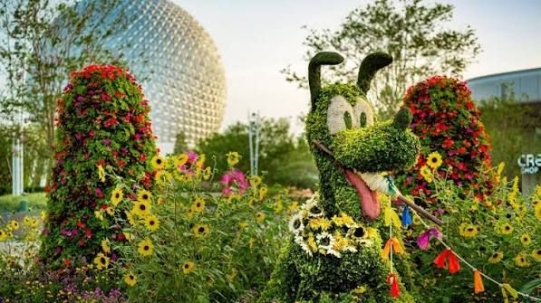
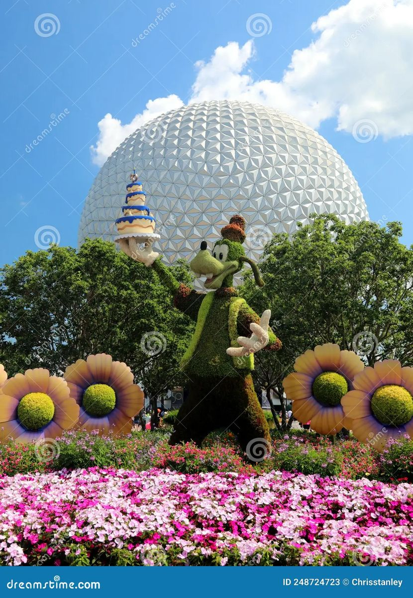
EPCOT se recorre distinto a los demás: se divide en dos mitades. La primera mitad, alrededor de la esfera Spaceship Earth, tiene las atracciones más nuevas y con más fila. La segunda mitad es World Showcase, un semicírculo con 11 pabellones de distintos países, cada uno con sus propias comidas y ambientación, que se recorre caminando alrededor de la laguna central. La lógica del día es: atracciones a la mañana, World Showcase a la tarde y noche.
| Apertura oficial | Confirmar en la app (estimado 9:00 am) |
| Early Theme Park Entry | 30 min antes de la apertura oficial |
| Levantarse | 6:45 am |
| Salir de la habitación | 7:30 am |
| Estar en la entrada del parque | 8:00 am |
Bajan del bus en la parada de EPCOT → seguridad → molinetes bajo la esfera Spaceship Earth. Desde ahí, caminen hacia el área de World Discovery / World Celebration según hacia dónde apunte la prioridad del día.
Guardians of the Galaxy: Cosmic Rewind usa Lightning Lane Single Pass con ventana horaria propia — no es "ir apenas abre", sino llegar a la hora que reservaron. Si consiguieron ese Single Pass, usen el Early Entry para Test Track, que junta fila larga temprano y no siempre tiene Single Pass disponible. Si NO consiguieron Single Pass para Guardians, prioricen ir ahí apenas abre el parque, antes que a Test Track.
🎢 Montaña rusa en la oscuridad con asientos que giran libremente.
🌑 🔄 🤢
⚡ Lightning Lane Single Pass
Montaña rusa en la oscuridad con asientos que giran libremente. Altura mínima 107 cm / 42". Puede marear a quien sea sensible a las vueltas.
🔁 Mientras tanto: Test Track, del otro lado de World Discovery.
♿ Rider Switch / Child Swap disponible: si una de las dos no sube (por altura o porque no quiere), un adulto espera afuera con ella mientras el resto hace la fila; al bajar, se turnan sin hacer la fila dos veces — se pide al Cast Member antes de subir.
🎢 Simulación de manejo a alta velocidad, con un tramo rápido al final.
💨 ☀️
⚡ Lightning Lane Multi Pass
Simulación de manejo a alta velocidad, con un tramo rápido al final. Altura mínima 102 cm / 40".
🎢 Vuelo simulado suspendido, muy suave, sentados.
💺 ❄️
⚡ Lightning Lane Multi Pass
Vuelo simulado suspendido, muy suave, sentados. Altura mínima 102 cm / 40". Apta para toda la familia.
🎢 Recorrido lento tipo "clipper" con peces reales de fondo.
💺
⚡ Universal Express incluido (1 uso por atracción en Epic Universe)
Recorrido lento tipo "clipper" con peces reales de fondo. Sin restricción de altura.
Recién al mediodía crucen hacia World Showcase para almorzar con un crédito Quick Service en México, Alemania o Japón — así arrancan el recorrido de los pabellones ya con el estómago resuelto.
Recorran el semicírculo en una sola dirección (por ejemplo, saliendo hacia México y avanzando hasta Canadá) para no cruzar de un lado a otro sin necesidad.
🎢 Bote temático de Frozen, suave.
🌑
⚡ Lightning Lane Multi Pass
Bote temático de Frozen, suave. Sin restricción de altura. Muy pedida por las nenas.
🎢 Recorrido "miniaturizado" al ras del piso, muy visual.
🕶️ 🌑
⚡ Lightning Lane Multi Pass
Recorrido "miniaturizado" al ras del piso, muy visual. Sin restricción de altura.
Verifiquen en la app al llegar al parque el horario del espectáculo nocturno vigente sobre la laguna (actualmente "Luminous The Symphony of Us"). Conviene ubicarse en el borde de la laguna, del lado de World Showcase Plaza o cerca de Italia/Francia, unos 30-40 minutos antes del horario para tener buena vista sin apuro.
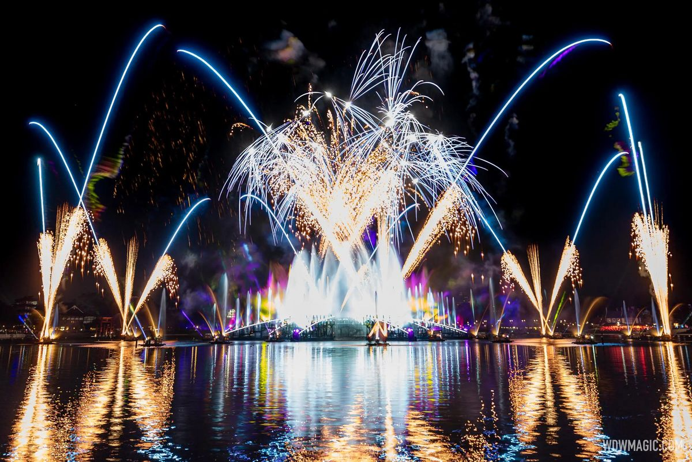
Apenas termina el espectáculo nocturno, todo el público sale a la vez hacia la salida principal — las filas de bus crecen mucho en ese rato. Calculen 30-45 minutos extra, o esperen 15 minutos en el lugar antes de caminar hacia la salida para esquivar el pico.
El evento termina a medianoche y probablemente vuelvan al hotel entre la 01:00 y las 02:00 am. Por eso hoy no hacemos Magic Kingdom desde temprano — es un día deliberadamente descansado, para llegar con energía a la fiesta. Tiene su propia pestaña completa — abran "Fiesta de Mickey" en el menú de arriba para el plan hora por hora del evento. Acá va solo el resumen del día.
Después de la Fiesta de Mickey del 9, probablemente lleguen al hotel entre la 01:00 y las 02:00 am. Todavía tienen disponible el ticket de Animal Kingdom, y hay dos formas válidas de usarlo. Esta decisión queda a criterio de la familia — no hay una opción incorrecta.
✅ Miami más tranquilo el día 11
⚠️ Vienen de acostarse muy tarde
✅ El día 10 es recuperación real
⚠️ Parque y viaje a Miami el mismo día
Si eligen esta opción, no recomendamos un Rope Drop agresivo — vienen de una noche muy larga.
Para el recorrido dentro del parque (Kilimanjaro Safaris, Pandora, Asia, almuerzo y Plan B), usen la guía completa de Animal Kingdom que está en la pestaña del 11 de noviembre — es la misma información, solo que hoy no tienen la presión del horario límite para viajar a Miami.
El día 11 queda completamente liberado para el check-out y el traslado tranquilo a Miami, sin combinar parque y ruta el mismo día.
Puede ser mucho más cómoda después de una noche tan larga en la Fiesta de Mickey.
Si eligen esta opción, el plan completo de Animal Kingdom (con check-out, recorrido y horario de salida hacia Miami) está desarrollado en detalle en la pestaña del 11 de noviembre.
Este día tiene dos caminos posibles, según qué hayan elegido ayer. Revisen la pestaña del 10 de noviembre si todavía no decidieron.
Hoy es simplemente check-out tranquilo y traslado a Miami, sin parque. Check-out de Disney's All-Star Movies Resort a las 11:00 am, carguen el vehículo con las valijas ya armadas, y salgan hacia Miami con el margen que necesiten según la hora de llegada deseada.
Sigan con el plan completo desarrollado abajo: check-out con equipaje en bell services, recorrido tranquilo por el parque y salida hacia Miami a la tarde.
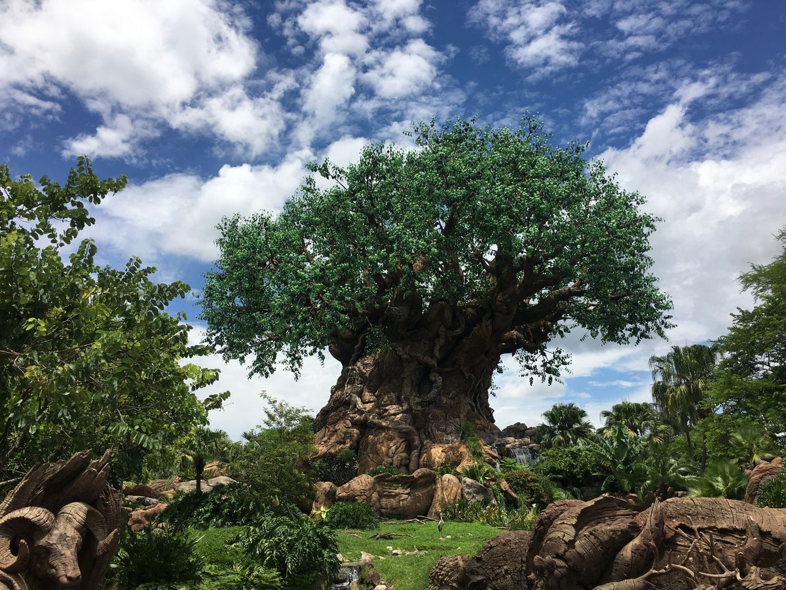
| Atracción | Mínimo | Valeria 145 | Sarahí 122 | Intensidad |
|---|---|---|---|---|
| Kilimanjaro Safaris | Sin mínimo | ✅ | ✅ | 🟢 |
| Avatar Flight of Passage | 112 cm | ✅ | ✅ | 🟡 |
| Na'vi River Journey | Sin mínimo | ✅ | ✅ | 🟢 |
| Expedition Everest | 112 cm | ✅ | ✅ | 🔴 |
| Kali River Rapids | 97 cm | ✅ | ✅ | 🟢 |
Es el último parque del viaje y el objetivo no es hacer todo: es cerrar con un día tranquilo, sin apuro, y salir a tiempo hacia Miami. Hoy la prioridad es el reloj, no la lista de atracciones.
Si el beneficio de estacionamiento gratuito por ser huésped de un hotel Disney sigue vigente para ustedes el día del check-out, pueden usarlo — pero confirmen esta condición antes del viaje, no está garantizada como beneficio definitivo.
| Apertura oficial | 7:30 am |
| Hora recomendada de ingreso | 10:00 am — hoy no hace falta Rope Drop ni Early Entry |
Al llegar, pasan por seguridad y molinetes igual que los otros días, pero sin el apuro de la mañana: es el único parque del viaje donde recomendamos entrar tranquilos, ya con el equipaje resuelto en el hotel.
🎢 Recorrido en vehículo abierto por una sabana con animales reales en libertad.
☀️ 🚶
⚡ Lightning Lane Multi Pass
Recorrido en vehículo abierto por una sabana con animales reales en libertad. Sin restricción de altura. Mejor temprano.
🎢 Simulador de vuelo en movimiento, sentados como en moto.
🕶️ 🤢 ❄️
⚡ Lightning Lane Multi Pass
Simulador de vuelo en movimiento, sentados como en moto. Altura mínima 112 cm / 44". Verificar con Sarahí según su medición.
🔒 Lockers: Lockers gratuitos recomendados (mochilas no entran).
🔁 Mientras tanto: Na'vi River Journey, en la misma zona, sin restricción de altura.
♿ Rider Switch / Child Swap disponible: si una de las dos no sube (por altura o porque no quiere), un adulto espera afuera con ella mientras el resto hace la fila; al bajar, se turnan sin hacer la fila dos veces — se pide al Cast Member antes de subir.
🎢 Bote lento y visual, muy tranquilo.
🌑 💺
⚡ Universal Express incluido (1 uso por atracción en Epic Universe)
Bote lento y visual, muy tranquilo. Sin restricción de altura. Apta para toda la familia.
🎢 Montaña rusa con un tramo hacia atrás y un yeti animatrónico.
💨 ⬇️ ☀️
⚡ Lightning Lane Multi Pass
Montaña rusa con un tramo hacia atrás y un yeti animatrónico. Altura mínima 112 cm / 44".
🔒 Lockers: Lockers gratuitos recomendados.
🎢 Bote de rápidos, moja en serio.
💦 ☀️
⚡ Universal Express incluido (1 uso por atracción en Epic Universe)
Bote de rápidos, moja en serio. Altura mínima 97 cm / 38". Como es el último día antes de viajar, evalúen si conviene mojarse o dejarla para otra vuelta.
🔒 Lockers: Locker recomendado / poncho si no quieren mojarse del todo.
Usen los últimos créditos Quick Service que les queden acá — es el último día para gastarlos (ver la pestaña "Comidas y fotos" para el presupuesto completo de los 7 días).
Si quieren llegar a Miami antes del anochecer, calculen así: hora deseada de llegada a Miami, menos duración del viaje (aprox. 3h30-4h en auto desde Orlando, sin contar paradas), menos el tiempo de caminar desde el parque hasta el estacionamiento/punto de encuentro del transporte y retirar el equipaje en el hotel (30-45 min). Con esa cuenta, salgan del parque antes de las 17:00 hs para tener margen real, sin ir corriendo.
Kilimanjaro Safaris y Avatar Flight of Passage son las dos experiencias que recomendamos no sacrificar, en ese orden.
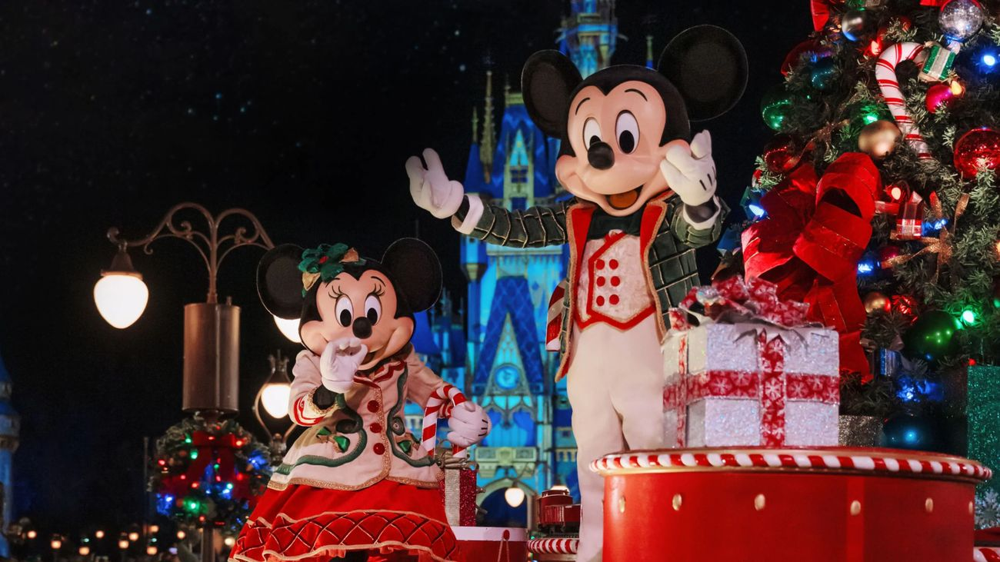
Es un evento con entrada aparte (hard ticket), separado del ticket diario de Magic Kingdom del 5 de noviembre. La fecha del 9 de noviembre de 2026 está confirmada oficialmente por Disney. A diferencia del 5, hoy no van a estar en el parque desde la mañana: el plan es un día liviano de descanso y una entrada específica para el evento desde las 16:00 hs.
El evento funciona de 19:00 a 00:00 hs. Los que tienen entrada al evento (ustedes) pueden ingresar al parque desde las 16:00 hs — es una entrada anticipada exclusiva para asistentes a la fiesta, distinta del ticket diario que usaron el 5 de noviembre.
El evento termina a medianoche y van a volver al hotel entre la 01:00 y las 02:00 am. Por eso la primera mitad del día tiene que ser deliberadamente liviana — no es momento de sumar otro parque ni actividades demandantes.
Nada de compras importantes, otro parque, ni planes que los dejen cansados antes de las 16:00. La energía de hoy se guarda para esta noche.
El objetivo es llegar descansados para aprovechar el evento completo hasta las 00:00.
Entre el ingreso (16:00) y el arranque formal del evento (19:00), el parque todavía tiene visitantes del ticket diario regular. Aprovechen para recorrer con calma, sacar fotos y ubicarse — no es el mejor momento para atracciones de mucha fila, esas van a bajar bastante después de las 19:00.
A partir de las 19:00, el parque cambia por completo: baja la cantidad de gente (solo quedan los asistentes al evento), aparecen las estaciones de golosinas gratuitas, nieve artificial en Main Street y personajes exclusivos de la fiesta.
Disney todavía no publicó los horarios definitivos de "Mickey's Once Upon a Christmastime Parade" y del espectáculo de fuegos artificiales para esta fecha puntual. Apenas los publiquen (normalmente unas semanas antes del evento), hay que revisarlos en la app y armar el horario real de esta etapa. Como referencia general, en ediciones anteriores el desfile suele repetirse dos veces durante la noche y los fuegos van cerca del cierre.
Dejen las atracciones para huecos con espera realmente baja entre un evento exclusivo y otro — no es el objetivo central de la noche. Revisen la app: varias atracciones bajan a 10-15 minutos de fila durante el evento. Las familiares suaves (Peter Pan, Small World, Winnie the Pooh, Buzz Lightyear) son las que más conviene dejar para esta noche, porque tienen mucha menos fila que de día.
Al terminar el evento a las 00:00, todo el público sale junto — la espera de buses puede ser larga (30-50 minutos) con las nenas ya muy cansadas. Recomendamos pedir un Uber/Lyft desde la puerta del parque apenas terminan los fuegos, en vez de esperar el bus de Disney esa noche puntual.
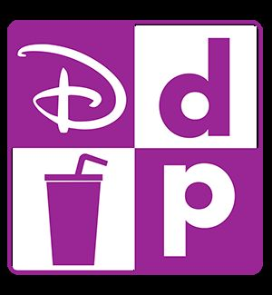
El plan incluido en la reserva de Disney entrega, por persona y por noche: 2 créditos de comida rápida (Quick Service) + 1 crédito de snack. Con 4 personas y 7 noches, el pool total de la familia para toda la estadía es:
| Tipo de crédito | Por persona / noche | Total del viaje (4 personas × 7 noches) |
|---|---|---|
| Quick Service | 2 | 56 créditos |
| Snack | 1 | 28 créditos |
Abran My Disney Experience → Menú → Mi plan / My Plans → Dining Plan. Ahí aparece cuántos créditos Quick Service y snack les quedan en tiempo real, actualizado apenas usan uno.
Sarahí tiene 8 años, así que en los locales donde el menú lo permite hay que elegir el menú infantil (Disney Kids' Meal) al armar su pedido — suele incluir plato principal, guarnición y bebida, y cuenta como 1 crédito Quick Service igual que el de un adulto.
La idea de esta tabla es que no lleguen al check-out con 20 comidas sin usar, ni se queden sin créditos a mitad de semana. Es orientativa: pueden mover comidas de un día a otro sin problema, los créditos no vencen día a día.
| Día | Quick Service sugeridos | Snack sugeridos | Notas |
|---|---|---|---|
| Mié 4 nov (llegada) | 4 (1 x persona, cena) | 4 | Cena liviana al llegar al hotel |
| Jue 5 nov (Magic Kingdom + Be Our Guest) | 4 (1 x persona) | 4 | Be Our Guest usa 1 crédito Quick Service por persona a mediodía; sumen una cena liviana |
| Vie 6 nov (Hollywood Studios) | 8 (2 x persona) | 4 | Almuerzo + cena en el parque |
| Sáb 7 nov (libre) | 4 (1 x persona) | 4 | Cena; almuerzo libre/afuera si prefieren |
| Dom 8 nov (EPCOT) | 8 (2 x persona) | 4 | Almuerzo + cena en el parque |
| Lun 9 nov (descanso + Fiesta) | 4 (1 x persona) | 0 | Almuerzo tranquilo antes de la fiesta; guardamos snacks para los treats gratis del evento |
| Mar 10 nov (Animal Kingdom o libre) | 8 (2 x persona) | 4 | Si hacen Animal Kingdom hoy: almuerzo + cena en el parque. Si es día libre: bajen a 4 créditos y muevan los otros 4 al día 11 |
| Mié 11 nov (Animal Kingdom o salida) | 8 (2 x persona) | 4 | Desayuno/almuerzo + snack de salida antes de Miami — o los créditos que muevan del día 10 si Animal Kingdom queda para hoy |
| Total usado | 48 | 28 | Quedan 8 créditos Quick Service de margen para lo que surja |
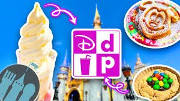
Cada integrante del grupo tiene un vaso reutilizable incluido. Se retira en el food court de Disney's All-Star Movies Resort (mostrar la reserva o el MagicMobile al pedirlo), y sirve para recargar bebidas sin costo en las estaciones de bebidas del hotel, cuantas veces quieran durante toda la estadía.
El vaso no es válido para recargar bebidas dentro de los parques (Magic Kingdom, EPCOT, Hollywood Studios, Animal Kingdom) ni en Universal. Solo funciona en las estaciones de bebidas de los hoteles Disney.
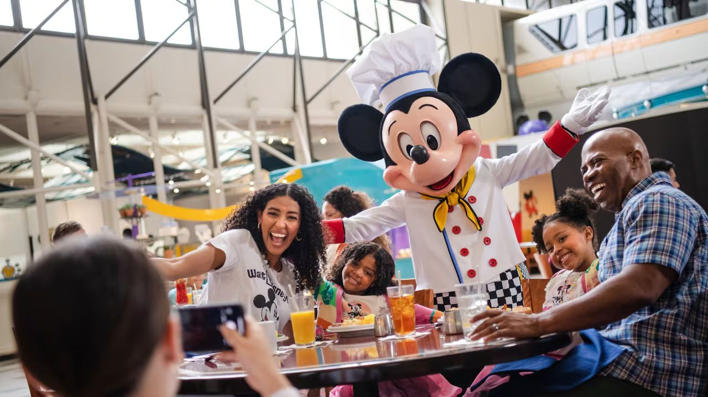
El Memory Maker está incluido en la parte Disney del viaje y les da fotos ilimitadas durante toda la estadía. No incluye Universal — ahí no tienen ningún producto de fotos contratado, así que las fotos de Universal las sacan ustedes mismos con el celular.
Cada día de parque ya tiene su propio "Plan B" abajo del todo, pero estas son las reglas generales que sirven para cualquier imprevisto, en cualquier parque:
Los números completos de confirmación y reserva están disponibles en los comprobantes originales enviados por mail; en esta guía se muestran enmascarados por privacidad.